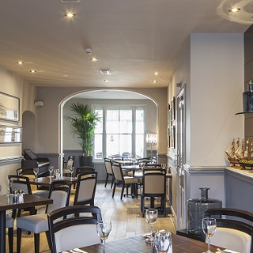
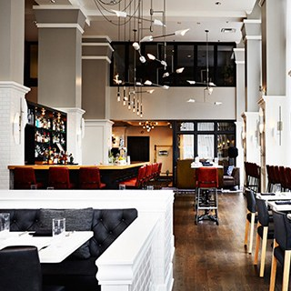

1restaurant - 주방
맛, 청결, 섬세함.... 궁시렁 궁시렁 궁시렁.
2food - 대표음식
우리 가게의 강추 메뉴입니다.

3restaurant - 카페식 레스토랑
데이트 장소로 추천해요.

4restaurant - 시카고 레스토랑
비지니스맨 및 가족 단위 손님이 많습니다.
맛, 청결, 섬세함.... 궁시렁 궁시렁 궁시렁.
우리 가게의 강추 메뉴입니다.
데이트 장소로 추천해요.
비지니스맨 및 가족 단위 손님이 많습니다.